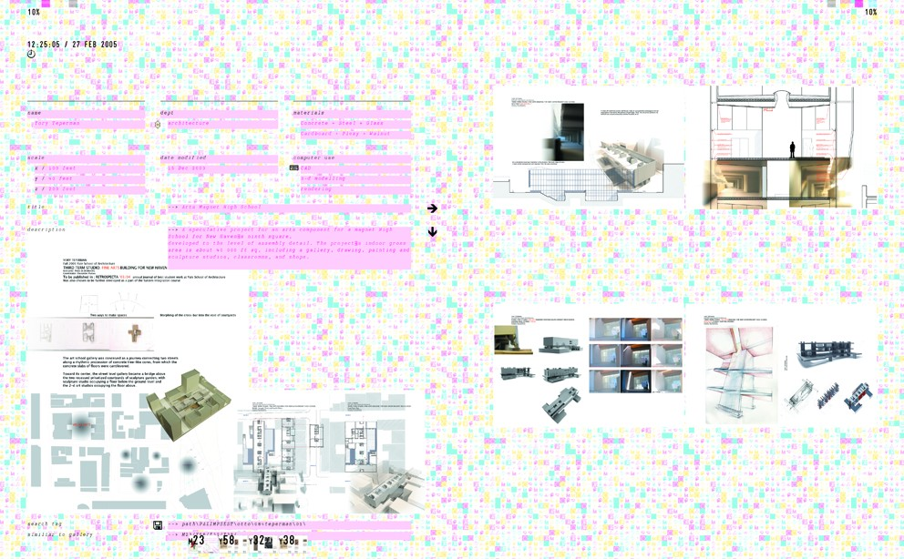
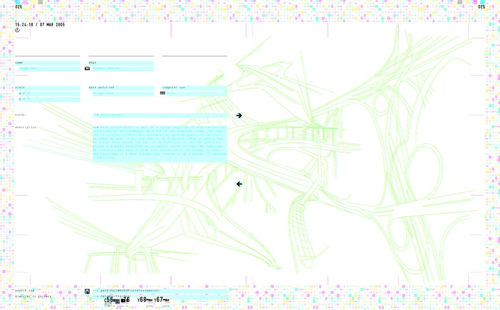
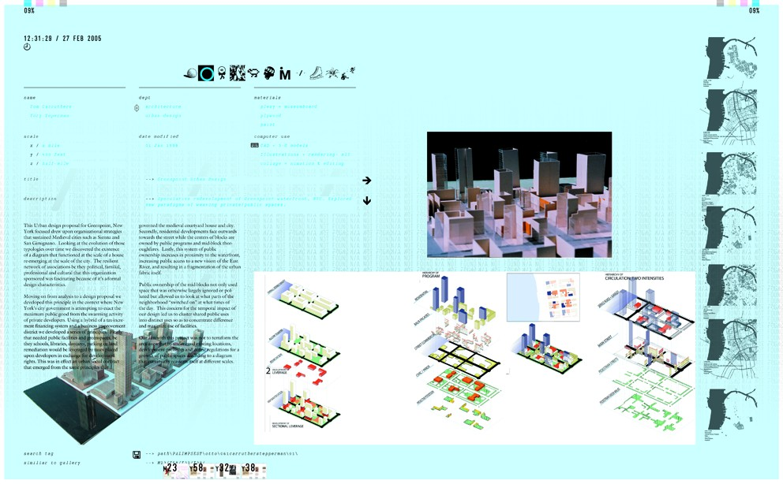
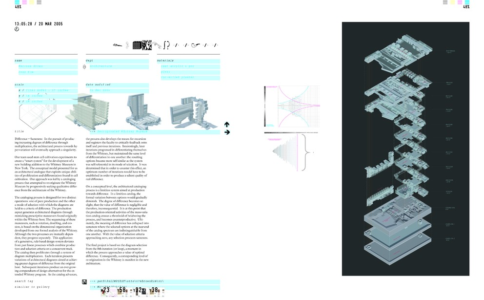

A pipeline from editorial judgement to layout, with the designer setting the rules and the system doing the placing.
A three-digit ID from the order the editors solicited it, forming the file structure Otto reads.
Eleven icon-paired answers shape the page; the twelfth picks one of four templates.
Otto averages each image’s colour and uses ink saturation to decide where it sits in the book.
Text keeps the editors’ order; art signatures are shuffled at the bindery, so no two copies match.
Spreads generated by the system, shown in sequence the way a reader shuffles through a copy.




Each spread carries Otto’s working marks: the submission number and date, the contributor’s icon answers, and colour-coded fields read from the work itself.